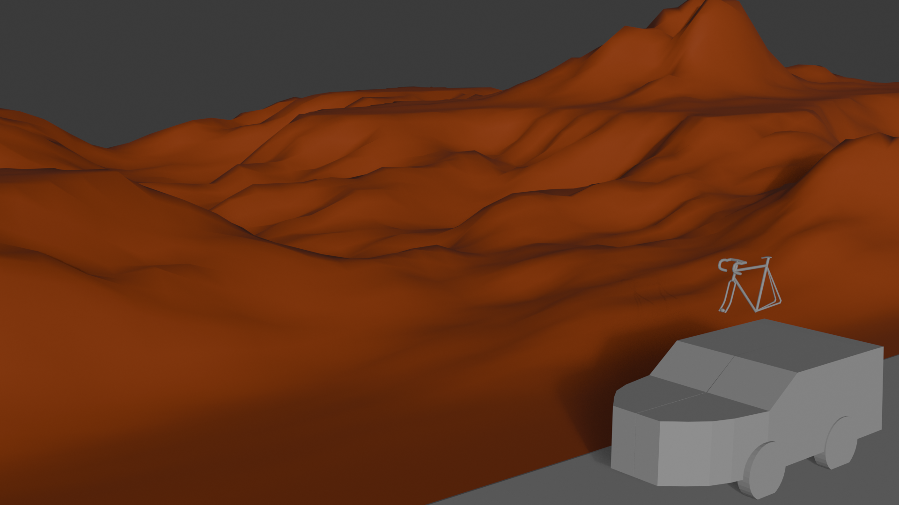
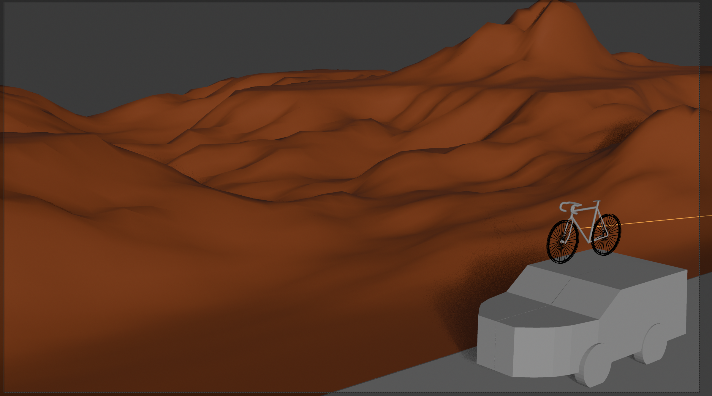

the inspo pic


So basically, I started this whole Blender project with the idea of recreating my computer's background. It's a shot of Moab with a bike shadow, and I just love that image from the trip. Plus, I thought shadows in Blender would be a neat effect to play with.
I started off trying to make a mountain from a cube, but that didn't feel right, so I scrapped it.
Saturday 7:00 pm to way too late - I moved to designing a bike. I found a YouTube tutorial, but honestly, it was kind of tough and not super beginner-friendly, so it took me a few days.
Sunday at 9:10 pm - Despair set in as I wasn't done with a single object - thought about trying to make the claim a bike is 3 objects (a frame and two tires) - I gave up on the YouTube video and went rough.
Monday - I start on my car - no video just gut action here. Starting with a cube and using a mirror reflection so both sides matched.
Monday at 4:30 - I tried out ATV landscape and wanted to cry.
Honestly, this whole thing has felt pretty tough as a newbie, and I'm still figuring out what my third object will be—maybe a tree instead of a mountain. We'll see.
Tuesday at 3:30 - Despair part 2 - NOTHING IS MOVING
I finally got my canyons!! with ATV landscape add in
4:22pm - Despair part 3 - camera view is not working - google it - still not working - questioning my life decisions
4:27pm - Oh no my tires don't show up….
4:34pm - Calls it good enough.